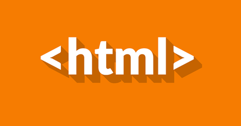

Favicon e Imagens
Favicon
Na pasta com seu documento HTML, adicione o favicon redimencionado e em formato de "icon".
A dimensão ideal para um favicon depende de onde ele será usado. O tamanho mais comum é de 16x16 pixels, mas existem outras dimensões que podem ser mais adequadas para diferentes situações:
- 32x32 pixels: Ideal para promover o site ou conteúdo na barra de tarefas
- 96x96 pixels: Recomendado para atrair usuários do Google TV
- 114x114 pixels: Ideal para a versão mais recente do iPhone
- 128x128 pixels: Ideal para promover o site na Chrome Web Store
- 195x195 pixels: Pode ser adequado para quem usa o navegador Opera ou as configurações de Discagem Rápida do Opera
O Google exige que o favicon seja um múltiplo de um quadrado de 48 pixels, como 48x48px, 96x96px, 144x144px.
Outros pontos a considerar sobre favicons são:
Arquivos SVG não possuem restrições de tamanho específicas
Qualquer tipo de favicon reconhecido é aceitável
A URL do favicon deve ser estável
É possível adequar o favicon em um editor como o Canva ou Photoshop
Na área "head" do código, acima de "title" adicione a tag <link rel="icon" href="NomedoFavicon.ico">
Imagens
Para adicionar imagens usa-se a tag <img src="NomedaImagem" alt="Nome ou do que se trata a imagem">
